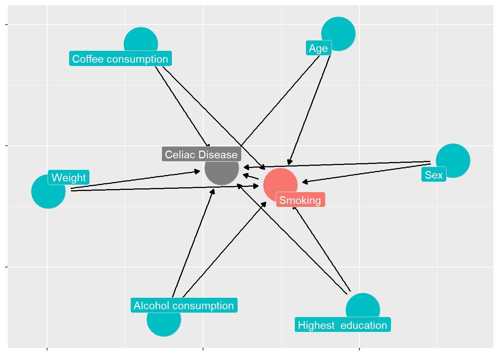

Effect of smoking on celiac disease: results from a synthetic case-control population
Spring 2023 Obligatory Assignment; SMED8002 Epidemiology II;
1 Introduction
Celiac disease (CD) has become globally common in all age groups (Vilppula et al., 2009), especially among Caucasian populations who are genetically predisposed. The prevalence of CD has significantly increased over the past 50 years and in the northern Europe it is prevalent among 1-2% of the population (Lohi et al., 2007). While the global prevalence of CD is around 1% (Singh et al., 2018), some Nordic populations have recorded higher than global average numbers (Dydensborg et al., 2012; Kvamme et al., 2022; Myléus et al., 2009; Vilppula et al., 2009).
In fact, only about one in every hundred people from the Western countries eventually develop the disease even though the consumption of gluten is remarkably high. This could be due to three reasons: 1) the genetic variation in the population is huge or else the samples are selectively chosen as per study requirements; 2) availability of highly accurate screening methods are still not at par and finally 3) there might be some environmental factors which affects the disease.
Several studies have indicated CD to be associated significantly with environmental factors such as short breastfeeding (Akobeng et al., 2006), caesarean delivery (Mårild et al., 2012), childhood infections (Stene et al., 2006) etc. However, individual studies (Snook et al., 1996; Vazquez et al., 2001) and even a comprehensive meta-analysis (Wijarnpreecha et al., 2018)
2 Methods
2.1 Data
A synthetic data has been generated using the HUNT 4 samples as reference. The outcome variable is the occurrence of celiac disease assessed by positive serological or biopsy results. The exposure of interest in the study was the smoking status of the individual. Socio-economic factors such as age and sex were considered with behavioral factors such as alcohol and coffee consumption as confounding between the exposure and outcome.
2.2 Case control study design
2.3 Directed Acyclic Graphs
2.4 Statistical Analysis
blah blah blah
3 Results

To refer Figure 1 do as the code suggest.
Descriptive table, To refer Table 1 do as the code suggest.
| Celiac disease | Smoking status | Total | |
|---|---|---|---|
| Ever | Never | ||
| No | 29767 56 % 98.3 % |
23347 44 % 98.2 % |
53114 100 % 98.3 % |
| Yes | 504 53.8 % 1.7 % |
433 46.2 % 1.8 % |
937 100 % 1.7 % |
| Total | 30271 56 % 100 % |
23780 44 % 100 % |
54051 100 % 100 % |
| χ2=1.810 · df=1 · φ=0.006 · p=0.179 | |||
Relative risk table refer Table 2 do as the code suggest.
| Sex | Alcohol consumption | Total | |
|---|---|---|---|
| No | Yes | ||
| Female | 5045 17.3 % 54.7 % |
24159 82.7 % 53.9 % |
29204 100 % 54 % |
| Male | 4181 16.8 % 45.3 % |
20666 83.2 % 46.1 % |
24847 100 % 46 % |
| Total | 9226 17.1 % 100 % |
44825 82.9 % 100 % |
54051 100 % 100 % |
| χ2=1.872 · df=1 · φ=0.006 · p=0.171 | |||
4 Discussion
There are sufficient evidence that environmental exposures increases the risk of celiac disease.